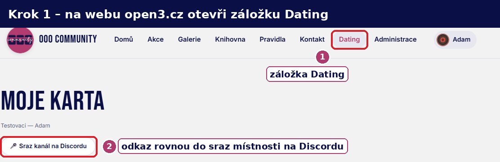
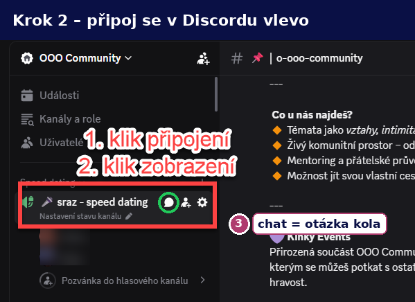
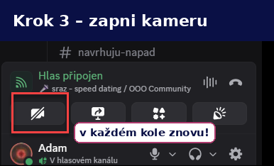
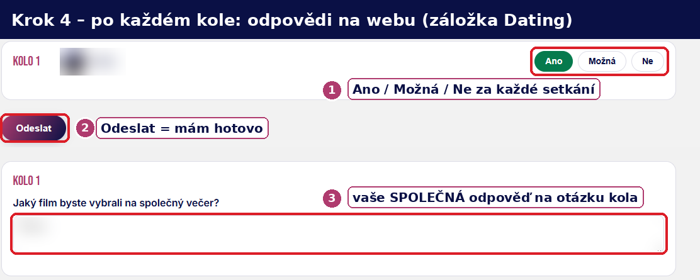

Seznamovací večer běží na Discordu OOO. Na tomhle webu máš odkaz do sraz místnosti a sem po každém kole zapisuješ odpovědi.
Máš Mac? Nainstaluj si aplikaci Discord. Ve webovém Discordu na Macu nefunguje zvuk.
Na Windows, Androidu i iPhonu funguje všechno bez omezení.
Nahoře na této stránce je tlačítko Sraz kanál na Discordu. Pošle tě rovnou do společné místnosti, kde se všichni sejdeme před začátkem.

Klikni na místnost sraz – speed dating v levém sloupci. První klik tě připojí, druhý ti ukáže i kamery ostatních, podobně jako v Google Meet.
Chat místnosti otevřeš v každé místnosti ikonkou bublinky vpravo nahoře. Tam ti bot v každém kole napíše otázku na rozjezd.

Kamera se po přesunu do nové místnosti sama nezapne. Zkontroluj ji proto na začátku každého kola.

U každého setkání zvol Ano / Možná / Ne a k otázce kola napište vaši společnou odpověď. Stačí, když ji napíše jeden z dvojice. Na konci klikni Odeslat.
Nikdo neuvidí, co jsi odpověděl/a. Po akci ti bot pošle soukromou zprávu jen o vzájemných shodách. Kdyby nepřišla, podívej se na Discordu do Žádostí o zprávy.

Odpovědi se ukládají průběžně, jak klikáš - "Odeslat" je jen potvrzení, že máš hotovo. Klidně to potvrď klidně znovu, kdyby ses spletl/a - nic se tím nerozbije.
Společná odpověď vás dvou na otázku kola - ta, na které jste se shodli. Vidíte a můžete ji upravovat oba a platí poslední zápis (kdo napíše později, přepíše předchozí text). Přibývá to postupně, jak se kola uzavírají.